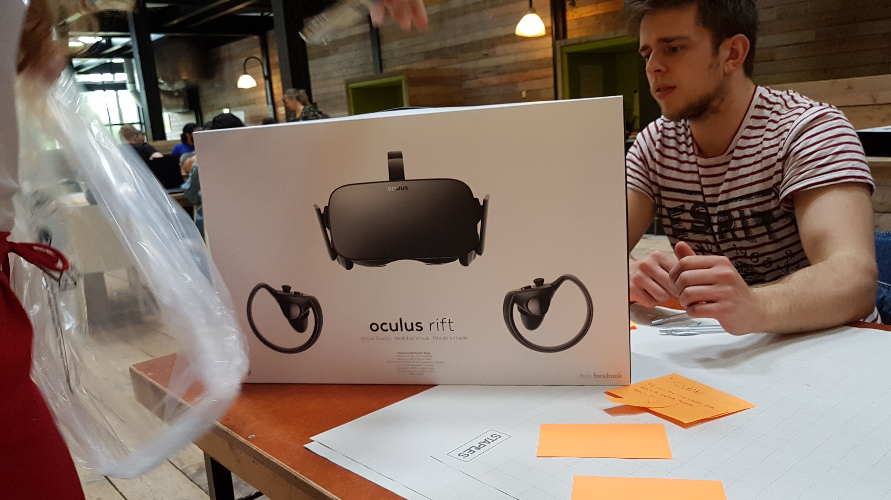
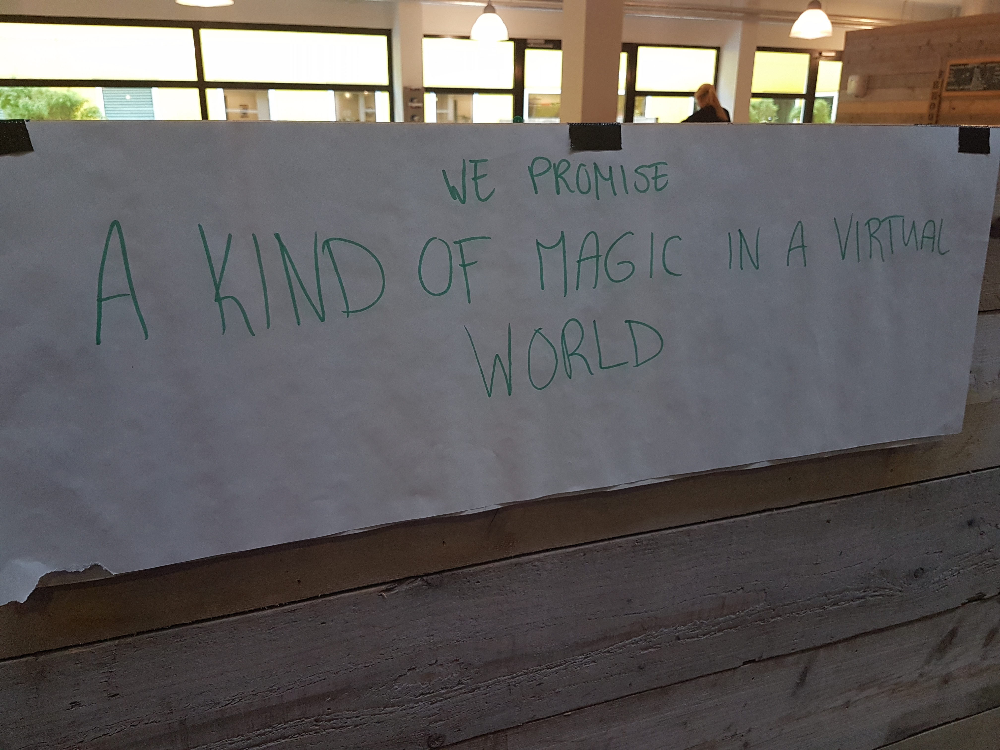
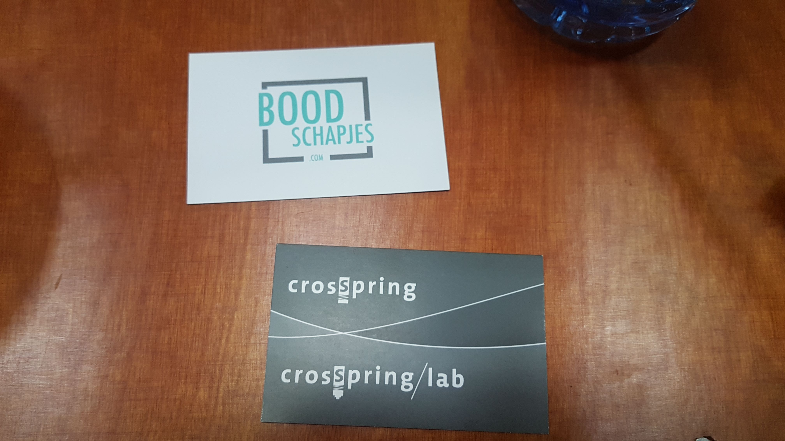

Process
Day 1
On day one I got to meet the team I was going to spend the coming 2 weeks with. This group included Skirmantas, Shanice, Leanne and Bas. After introductions we decided that the best next step was to brainstorm for ideas and then use dot voting to settle on the actual idea. Out of this brainstorm session came many ideas, including but not limited to a virtual classroom, a colour blind simulator and a AR/VR Lego builder. We voted for the various ideas and after some small discussion about feasibility we ended up settling on the colour blind vision concept. We split up tasks based on knowledge, where I would look at already existing libraries which could help us detect colours pixel by pixel. Furthermore we tried setting up VR on the laptops of Skirmantas and Leanne, but we failed to do so on both. As such Bas will be taking his PC with him Wednesday.
Brainstorm Concept

VR
Day 2
On day two we decided to change the idea to a new concept: Superpowers. This was due to the feeling shared amongst us that the old idea was a bit bland and boring. We split up new tasks where we researched various parts of the idea within the framework of Unity. I ended up checking how particle systems worked, which we could use as the superpowers.
Scrumm

Day 3
On day three Bas brought his PC to Zoetermeer. We installed it on the table and got all the wires running to where they were needed. After this we got to installing Oculus Rift on the PC. This didn’t go swimmingly at first, due to the sensor USB’s being rejected. But we found a tool to download and execute which updated the USB drivers after which the computer accepted the Oculus Rift and vice versa. After this we went to test the Oculus Rift to see how it feels like. Lastly we decided to swap the Oculus Touch controllers for the Leap Motion to add a whole new dimension to our game.
Working VR
Working VR Set
Working motion sensor
Day 4
On day four we started refining our idea based on the possibilities given to us by Leap Motion. For this we researched the technical capabilities and limitations of Leap Motion. In here we found a large amount of detectors which we could use as triggers. Due to the heavy emphasis on these detectors we decided to create a wizard training game, where the user would make different gestures with their hands in order to make different actions happen. I continued with the particle system we discovered on day two and made flames come out of my thumb as soon as I raised it. It did not work fully yet, since it did not stick to my thumb, which is something that we want. I also had a look at the different particle systems available and what we could do with these. Furthermore we worked on basic interaction between the hand and any game object. Lastly we had our first lecture today by next empire, which showed some promising applications of AR and VR amongst others.
Spells
Short
Lecture 7 June

Day 5
On day five we continued on our wizard game by thinking about how we could expand it with more levels and what to put in each of these levels. Another feature we discussed was having the game talk to the player in order to instruct him or her in a friendly manner. This could potentially open up a fun route we could use to guide people. In these levels we wanted to put elements such as shooting and throwing game objects and spells at targets, interact with said game objects and other gesture driven assignments. Furthermore we got a demo working where interactive balls would spawn upon giving a thumbs up. We ended up recycling a lot of this knowledge in the final product. Lastly we had our second lecture this day.
Balls
Lecture 8 June

Day 6
On day 6 I got more stuck into unity and went from exploring possibilities to actually creating the game. My first step was discarding the skeleton hands, and replacing them with “real” glove hands. For this we had to rerig the entire interaction and detection aspect. As such I took some time refining the thumb fire in order to make it more accurate and snappy to respond. I also got it finally stuck to the actual thumb. Secondly I placed a laser particle system at the palm of the player which would only fire when the hand is facing forward. We did all of this in tandem with our new promise.
Promise
Lasers
Day 7
On day 7 we continued where we left of yesterday, adding more features slowly but surely. Sadly enough slowly today due to annoying bugs we were encountering during the transfer from isolated testing environments to actual game areas with multiple detectors working in tandem. We did manage to get different elements working based on multiple, individual hand movements. Outside of this we also had companies come visit for the CMDate, which we took time for to discuss and have a conversation with. This slowed down today’s already slow rate to a crawl. So we came together at the end of the day to discuss this and make sure that the next day we would work hard and efficient.
Kaart
Kaarten

Day 8
During day eight we started on making actual implementable features directly. I worked on creating on different kinds of targets and shapes, such as pyramids made out of small cubes or a wall weighing as much as cardboard. This way people could interact with the objects in a variety of ways. Furthermore we worked on figuring out how buttons would work in this VR environment. Which we managed to solve as today drew to a close by noticing a very handy detector that could assist me in writing a small but effective trigger script. We also had some school children come visit us, which liked to play with the VR and Leap Motion. No pictures were allowed or taken of these.
Target

Pyramid

Day 9
On day nine we made the great migration from multiple laptops to the PC, which also means that from this day onward I alone could work directly on the program. This transfer didn’t go swimeingly, and as such took a considerable amount of time. However, in the end we managed to merge the main branches we had game scenes on into one project. Sadly enough this broke so much we had to scrap it the same day and start from scratch again, using the scenes only as indirect input. We ended up finding out what the issue was, it was that the prefabs used were clashing with each other and as such were creating a large amount of lag. But in the end we recreated most of the gesture and interaction we wanted back into the game before calling the day closed. I however took the project home and continued working on it at home, without the capability to test it. I did make a backup for a reason.
target
Day 10
On day ten I brought the freshly assembled Unity project and loaded it into the PC, and nothing happened. I managed to break things that were working perfectly fine yesterday. But being nothing if not foolhardy I managed to erase every single bug by the afternoon and even had some time to spare to add one more feature, which was disjointing the laser hands from movement to a regular button, since this way people had an easier time controlling the game world. Since the lasers tended to collide with everything. During the expo we had a lot of people play with the game and have a seemingly positive experience. We did notice one thing however, small children were to tiny and sunk through the floor in the game. But this was sadly an issue of the Oculus rift, which I had set to my height and didn’t allow for easy adjustment. All in all I am quite happy with how the expo turned out and had a blast of a time seeing people enjoy the game we made.
Final Product test
Product
Secret Motion
Secret Motion is a revolutionary new user experience in VR where the user has full access and control of their hands in a
virtual environment. The user can, through using his or her hands in real life with real
movement interact with the virtual world. The user can interact with various game objects,
by grabbing, slapping, smashing or cupping them to just name a few options. Not a single
controller is needed by the user to interact with the world. In this virtual world people
can unlock the full potential of VR and one of its many future paths. The development
of Secret Motion is just a prelude to the applications which could be developed in the
near future.
Secret Motion works via a Leap Motion mounted on the front of the Oculus Rift. This Leap
Motion is a infrared sensor which maps your hands in the real world to a skeleton with
joints in a virtual environment. This “Skeleton Data” is subsequently imported into unity
where we use it as the base for a plethora of operations. Firstly we map a glove over
the skeleton, so that your hands actually look like hands. Secondly we placed multiple
detectors on the hands, which, amongst others, detect your finger direction, your palm
direction and your hand collision. Through this we detect if the player is putting their
thumb up, and place a fire on the tip of his or her thumb, this fire followed the thumb
when moving it. It also allows for advanced collision with other game objects, by default
you could slap them or cup them. But grabbing them was a harder task. As such we have
implemented the Interaction Engine to allow for finer manipulation by estimating the
distance between fingers and, if close enough, placing the game object in the hand of
the user. A target is also placed into the game world for the player to throw to. Furthermore
various buttons are placed against a wall next to the user. The user can interact with
these buttons to reset the game objects or create entire new ones. One of these buttons
also enables laser hands, in this mode the user shoots lasers out of his or her palms.
These lasers also have very strong colliders and will blow away any other game object
with a lot of force.
Reflection
Experience
In the end I am really content with the product. Most, if not all of the users we had over seemed to enjoy it. We ourselves
enjoyed it and other fellow students also liked it. I would have liked to create more
for the user to interact with and experience, but we had to be real within these 2 weeks
and understand that we are not Leap Motion itself. I do think however, that we created
a very good tech demo which shows the potential of Leap Motion and VR.
I do find that, what we made, has a bland but high quality finish. The responsiveness
of the hands within the VR world was accurate and responsive to the motions made by the
user in real life. The only big issue was that people had to keep their hands within
their vision at all times, which was annoying at some times. But we had good hand tracking
with the hands doing exactly as we envisioned when we added the detectors to them. The
only hard detector was the grasping one, since people trying to throw could end up throwing
against their own hand if they threw to wild. One last thing was that people sometimes
thought the buttons were within reach, and tried to reach out for them, only to notice
they were further away. Upon which they had to physically move to them, as we had envisioned.
For Secret Motion being a 2nd day product, we did lack a real clear vision in the beginning
outside of the usage of the Leap Motion. We wanted to start out with a wizard training
simulator so we could have the user do a lot of tasks in order to show the possibilities.
But this ended up not being feasible. We then pivoted to a simpler wizard them up, where
the user could just play. But we ended up scapping most of that idea due to time and
technical constraints, since Unity would sometimes lock up rendering the environment
during time we did not have anymore. As such we ended up with this very high quality
tech demo, since it dd incorporate some of the features of the earlier ideas, such as
the laser hands and fire thumb. We started out equally, each having a task assigned to
us and working on said part. However, as we started narrowing and merging more and more,
we had to shift everything to the final main computer which meant that only one person
could do the final part of the game. Which ended up being me due to me being more advanced
with Unity compared to my team. However, I cannot say anything bad about them, since
they were really engaged and always tried to help me where they could. We ended up pushing
a lot of the features through on the final 2 days.
I spend my very extensive time, as in leaving with the train at 7:15 in the morning and
not returning until at least 19:00 in the evening, working on the project. Either debugging
errors and thinking up new game concept in the train, which I implemented as soon as
I arrived in Zoetermeer after discussing them with my team. My method for this was to
transform large problems, such as how do I shoot lasers out of my hands, into smaller
digestible pieces. Such as how do I attach something to the hand, how do lasers work,
how do I make it detect direction. Based on this I would then slowly build the solution
piece by piece. Also,
I always tend to describe my motivation as a diesel, very slow to start, but runs full
throttle once its ready. I am very much the same, struggling in the early mornings getting
started on a problem, but once I am deep into the material I won’t quit until I have
solved the problem. For this I use the aforementioned digestive method. Due to smaller
pieces being easier to start with. All in all I am quite happy with what I’ve, done.
Especially given the timeframe. I really enjoyed working with Unity and VR. As such I
am going to dedicate some of my free time coming summer break to learning more about
Unity.